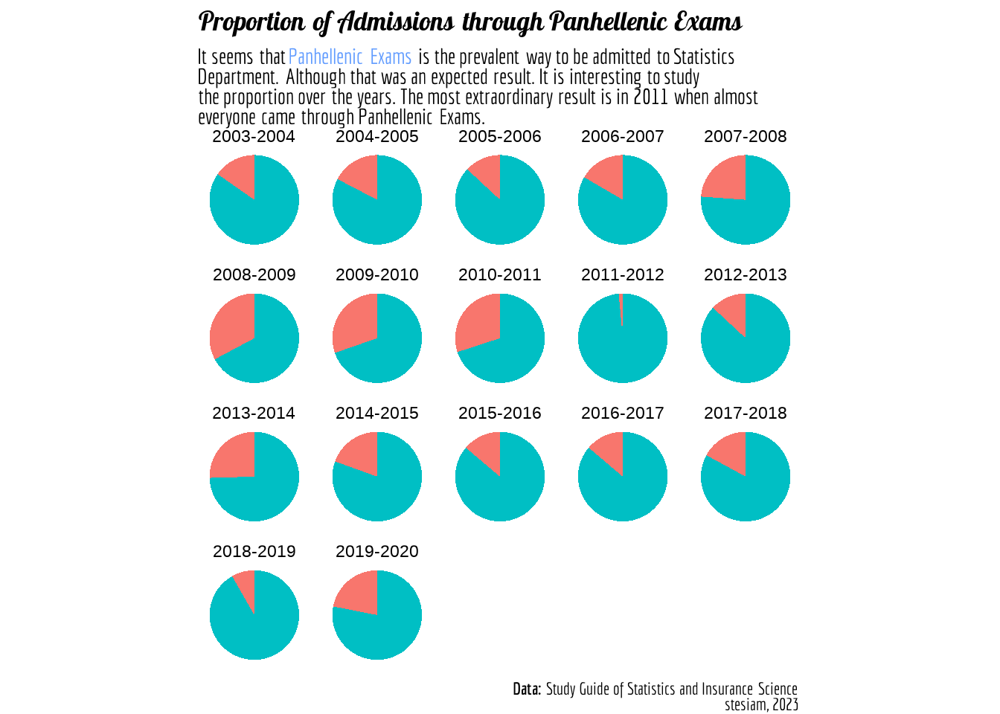
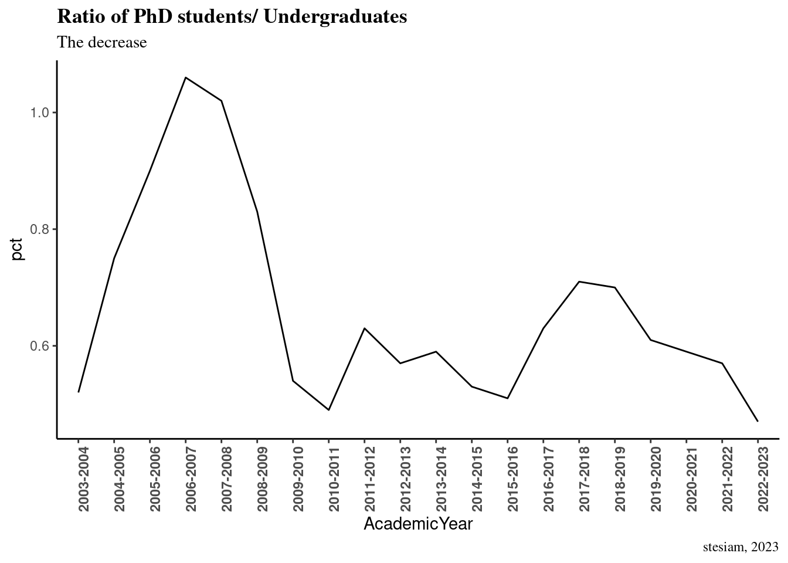
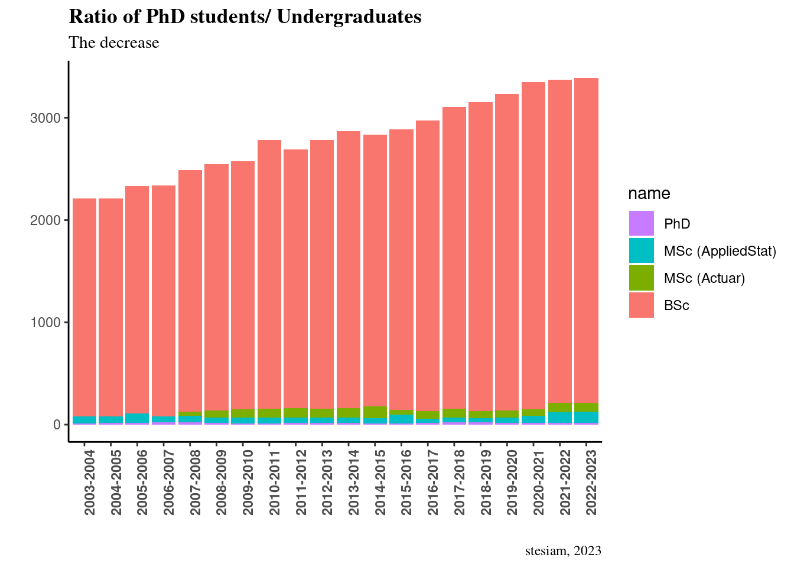
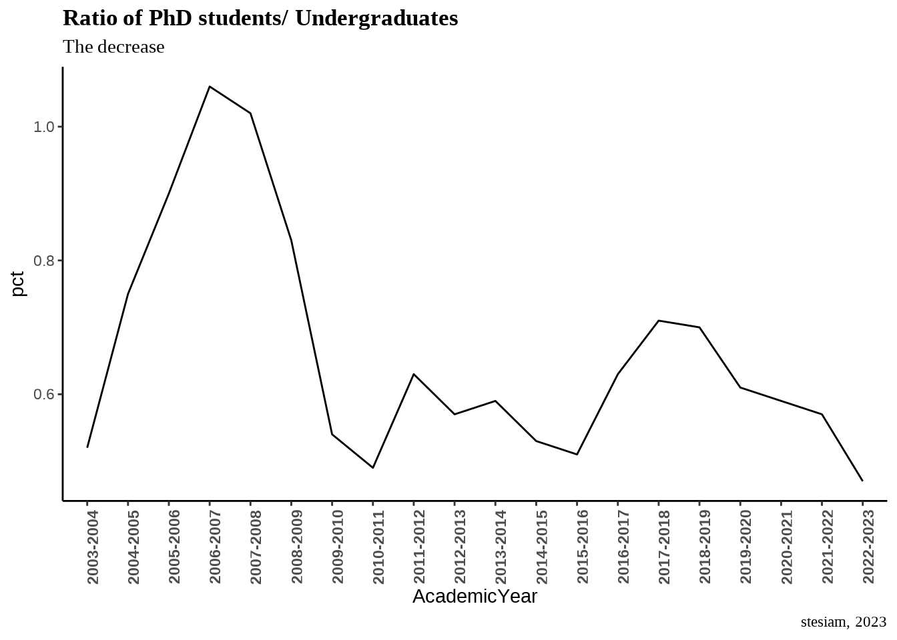

# remotes::install_github(c("ropensci/tabulizerjars", "ropensci/tabulizer"))Introduction
The recent study guide includes data about the graduates and their average grade of graduation over the years. First and foremost the data we are interested in are included in table form (which is good) but is is part of a pdf file (which is not good :)). Thankfully, tabulizer is the solution to this kind of problems.
Load Packages
As I will extract tables from a pdf file, I will definitely need tabulizer package. Unfortunately, I was not able to install the specific package, as I was getting an error similar to this one. This issue seems to be related to rJava package and this comment solved the issue. After installing rJava I was able to install successufully tabulizer as below:
Extract Data
My main source of data is the Department’s study guide. The most recent one (2022) has data on admissions, graduations etc., since 2004. It worths to note that there are irrelevant information that have to be elapsed beforehand.
# url = "https://www.unipi.gr/faculty/mbouts/anak/OS_22_23.pdf"
#
# download.file(url,
# destfile = "sg22.pdf",
# method = "wget",
# extra = "--no-check-certificate")
pdf_subset('sg22.pdf',
pages = 186:190, output = "subset.pdf")[1] "/home/stelios/Desktop/stesiam/english/2023-07-23-Graduates-of-Statistics/subset.pdf"statistics_tables <- extract_tables(
file = "subset.pdf",
method = "decide",
output = "data.frame")Analysing Data
Admitted students
Data on admissions show an
admitted_students = statistics_tables[[1]] %>%
.[-1,] %>%
setNames(c("Year", "Main_exams", "Transfer", "Entry_exams", "Other", "Total"))
admitted_students$Main_exams = admitted_students$Main_exams %>% as.integer()
admitted_students$Transfer= admitted_students$Transfer %>% as.integer()
admitted_students$Entry_exams = admitted_students$Entry_exams %>% as.integer()
admitted_students$Other = admitted_students$Other %>% as.integer()
rownames(admitted_students) = 1:nrow(admitted_students)
admitted_students = admitted_students %>%
pivot_longer(
cols = !Year,
names_to = "Admission_Type",
values_to = "count"
)
admitted_students %>%
reactable(
defaultPageSize = 5
)admitted_students %>%
filter(Admission_Type %in% c("Main_exams", "Total")) %>%
ggplot2::ggplot(., aes(x = Year, y = count, color = Admission_Type , group = Admission_Type)) +
geom_line() +
labs(
title = "Admitted students",
subtitle = "Admitted students over the years (2003-2023) at Department of Statistics and Insurance Science of <br> University of Piraeus. A significant drop in admissions occured in 2021 which is maily caused by the <br> introduction of grade requirements to be admitted to specific departments.",
caption = "stesiam, 2023",
x = "Academic Year",
y = "Students",
color = "Type of Admission"
) +
theme_classic() +
theme(
plot.title = element_markdown(family = "lobster", face="bold"),
plot.subtitle = element_markdown(family = "economica"),
plot.caption = element_markdown(family = "economica"),
axis.text.x = element_text(face="bold", angle=90)
)
Master Programmes
Department of Statistics and Isurance Science has 2 master programs
msc_students = statistics_tables[[2]] %>%
setNames(c("AcademicYear", "BSc", "MSc (AppliedStat)", "MSc (Actuar)", "PhD")) %>%
.[-1,]
rownames(msc_students) = 1:nrow(msc_students)
msc_students = msc_students %>%
mutate_at(c("BSc", "MSc (AppliedStat)", "MSc (Actuar)", "PhD"), as.numeric) %>%
mutate(pct = round((PhD/BSc)*100, 2))Warning: There was 1 warning in `mutate()`.
ℹ In argument: `MSc (Actuar) = .Primitive("as.double")(`MSc (Actuar)`)`.
Caused by warning:
! NAs introduced by coercionggplot(msc_students, aes(x = AcademicYear, y = pct, group = 1)) +
geom_line() +
labs(
title = "Ratio of PhD students/ Undergraduates",
subtitle = "The decrease ",
caption = "stesiam, 2023"
) +
theme_classic() +
theme(
plot.title = element_markdown(family = "serif", face="bold"),
plot.subtitle = element_markdown(family = "serif"),
plot.caption = element_markdown(family = "serif"),
axis.text.x = element_text(face="bold", angle=90)
)
tidy_students = msc_students %>%
select(!pct) %>%
tidyr::pivot_longer(., cols = !c(AcademicYear), values_to = "count")
ggplot(tidy_students, aes(x = AcademicYear, y = count, fill = name)) +
geom_col() +
guides(fill = guide_legend(reverse = TRUE)) +
labs(
title = "Ratio of PhD students/ Undergraduates",
subtitle = "The decrease ",
caption = "stesiam, 2023",
x = "",
y = ""
) +
theme_classic() +
theme(
plot.title = element_markdown(family = "serif", face="bold"),
plot.subtitle = element_markdown(family = "serif"),
plot.caption = element_markdown(family = "serif"),
axis.text.x = element_text(face="bold", angle=90)
)Warning: Removed 4 rows containing missing values (position_stack).
MSc Students
statistics_tables[[3]] %>%
select(c(1,2)) %>%
setNames(c("Year", "S")) %>%
.[-c(1,2),] %>%
separate(S, c('Admitted', 'Graduated')) %>%
na.omit() %>%
mutate(Ratio = round(as.numeric(Graduated)/as.numeric(Admitted), 2)) %>%
select(Year, Ratio) %>%
ggplot(.) +
geom_line(aes(x = Year, y = Ratio, group = 1))+
theme_classic()Warning: Expected 2 pieces. Missing pieces filled with `NA` in 21 rows [1, 3,
5, 7, 9, 11, 13, 15, 17, 19, 21, 23, 25, 27, 29, 31, 33, 35, 37, 39, ...].
Graduation Grade
Year [5.0 - 6) [6, 7) X3 ( AVG_Grade
1 Έτος Βαθμολογίας
2 [5.0-6.0) [6.0-7.0) [7.0-8.5) [8.5-10.0]
3 Αποφοίτησης (Σύνολο απο-
4 φοίτων)
5 2003-2004 20,71 (29) 60 (84) 19,29 (27) 0,00 (0) 6,46 (140)
6 2004-2005 16,89 (37) 62,10 (136) 21,00 (46) 0,00 (0) 6,54 (219)
7 2005-2006 24,17 (29) 55,83 (67) 19,17 (23) 0,83 (1) 6,48 (120)
8 2006-2007 6,13 (10) 72,39 (118) 19,63 (32) 1,84 (3) 6,51 (163)
9 2007-2008 23,38 (36) 59,09 (91) 16,88 (26) 0,65 (1) 6,41 (154)
10 2008-2009 24,68 (38) 61,69 (95) 12,99 (20) 0,64 (1) 6,39 (154)
11 2009-2010 34,62 (54) 54,48 (85) 10,90 (17) 0,00 (0) 6,30 (156)
12 2010-2011 25,16 (40) 57,86 (92) 16,35 (26) 0,63 (1) 6,40 (159)
13 2011-2012 24,10 (40) 59,04 (98) 14,46 (24) 2,41 (4) 6,43 (166)
14 2012-2013 25,13 (50) 63,32 (126) 10,05 (20) 1,51 (3) 6,36 (199)
15 2013-2014 32,33(107) 56,19 (186) 9,67 (32) 1,81 (6) 6,33 (331)
16 2014-2015 31,60 (67) 52,36 (111) 13,21 (28) 2,83 (6) 6,38 (212)
17 2015-2016 30,89 (38) 51,22 (63) 17,07 (21) 0,81 (1) 6,36 (123)
18 2016-2017 29,91 (35) 57,27 (67) 11,97 (14) 0,85 (1) 6,35 (117)
19 2017-2018 28,57 (18) 60,32 (38) 6,35 (4) 4,76 (3) 6,39 (63)
20 2018-2019 27,36 (58) 60,38 (128) 10,85 (23) 1,41 (3) 6,38 (212)
21 2019-2020 28,18 (62) 57,73 (127) 14,09 (31) 0,00 (0) 6,39 (220)
22 2020-2021 13,36 (33) 67,61 (167) 18,22 (45) 0,81 (2) 6,41 (247)
23 2021-2022 10,50 (19) 65,75 (119) 21,55 (39) 2,20 (4) 6,65 (181)Acknowledgements
Dataset based on recent study guide recent study guide of Department of Statistics and Insurance Science of the University of Piraeus.
Image by Victoria Loveland from Pixabay
References
Leeper, T. J., Vargas, M., & Paskhalis, T. (2023). Tabulizer: Bindings for tabula PDF table extractor library.
Lin, G. (2023). Reactable: Interactive data tables for r. Retrieved from https://CRAN.R-project.org/package=reactable
Ooms, J. (2023). Pdftools: Text extraction, rendering and converting of PDF documents. Retrieved from https://CRAN.R-project.org/package=pdftools
Qiu, Y., & See file AUTHORS for details., authors/contributors of the included fonts. (2020). Showtextdb: Font files for the showtext package. Retrieved from https://CRAN.R-project.org/package=showtextdb
Qiu, Y., & See file AUTHORS for details., authors/contributors of the included fonts. (2022a). Sysfonts: Loading fonts into r. Retrieved from https://github.com/yixuan/sysfonts
Qiu, Y., & See file AUTHORS for details., authors/contributors of the included software. (2022b). Showtext: Using fonts more easily in r graphs. Retrieved from https://github.com/yixuan/showtext
R Core Team. (2021). R: A language and environment for statistical computing. Vienna, Austria: R Foundation for Statistical Computing. Retrieved from https://www.R-project.org/
Urbanek, S. (2021). rJava: Low-level r to java interface. Retrieved from http://www.rforge.net/rJava/
Wickham, H. (2016). ggplot2: Elegant graphics for data analysis. Springer-Verlag New York. Retrieved from https://ggplot2.tidyverse.org
Wickham, H., Chang, W., Henry, L., Pedersen, T. L., Takahashi, K., Wilke, C., … Dunnington, D. (2022). ggplot2: Create elegant data visualisations using the grammar of graphics. Retrieved from https://CRAN.R-project.org/package=ggplot2
Wickham, H., François, R., Henry, L., Müller, K., & Vaughan, D. (2023). Dplyr: A grammar of data manipulation. Retrieved from https://CRAN.R-project.org/package=dplyr
Wickham, H., & Girlich, M. (2022). Tidyr: Tidy messy data. Retrieved from https://CRAN.R-project.org/package=tidyr
Wilke, C. O., & Wiernik, B. M. (2022). Ggtext: Improved text rendering support for ggplot2. Retrieved from https://wilkelab.org/ggtext/
Citation
BibTeX citation:
@online{2023,
author = {, stesiam},
title = {Statistics of {Statistics} {Graduates}},
date = {2023-07-23},
url = {https://www.stesiam.github.io/english/2023-07-23-Graduates-of-Statistics/2023-07-23-Graduates-of-Statistics.html},
langid = {en}
}
For attribution, please cite this work as:
stesiam. (2023, July 23). Statistics of Statistics Graduates. Retrieved
from https://www.stesiam.github.io/english/2023-07-23-Graduates-of-Statistics/2023-07-23-Graduates-of-Statistics.html